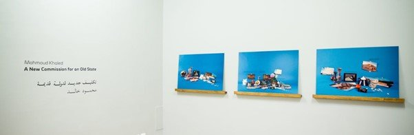
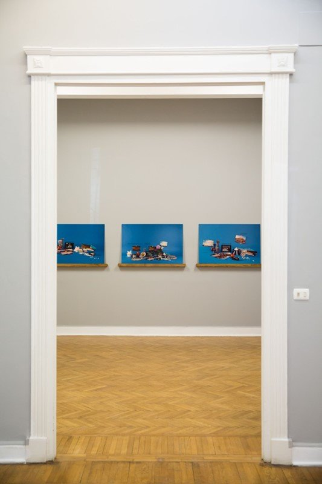
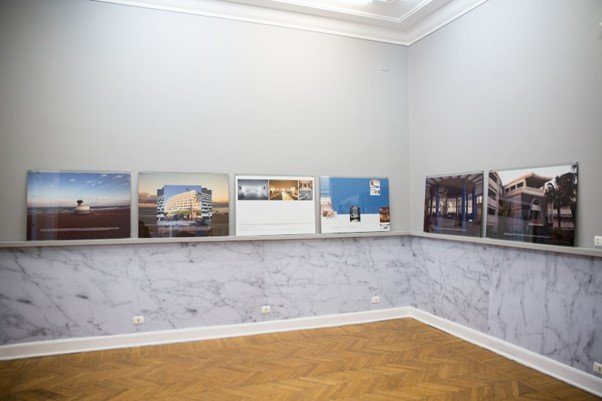
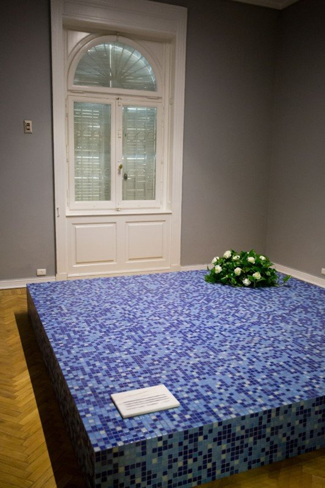
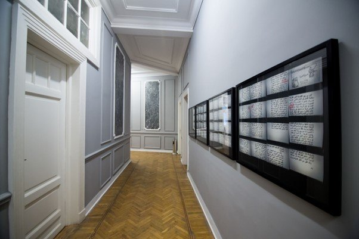

Mahmoud Khaled, A New Commission for an Old State, exhibition view. Courtesy: Mostafa Abdel-Aty
Originally published in Mada Masr on 9 April 2018
By Ismail Fayed
The first time I went to Maamoura was in 2005. A friend invited us over to his little summer flat by the sea, and while strolling along the beach walkway, he kept telling stories of celebrity sightings and socialite gossip from the late 1960s. "There, Soad Hosni used to sit and read. One time I walked up to her and asked her what project was she working on, and she looked up, smiled and said, 'Hopefully some exciting new feature film.'"
But celebrity sightings and high society nostalgia aside, Maamoura can serve as an exemplary narrative of the way history and politics trump everything, including monuments, old and new.
Originally a Ptolemaic ruin, Maamoura remained a wasteland and was called "al-kharaba" ("the dump") throughout much of the period that followed the Arab conquest of Egypt, until Muhammad Ali Pasha reclaimed the land and began building palaces and planting orchards during the mid-1830s. The construction of the Montaza Palace began in 1892, when Muhammad Ali's great-great-grandson Abbas Helmi II came to power. The area was continuously developed throughout the 20th century, from the reign of Sultan Hussein Kamel to that of King Farouk, and finally the post-independence era, where Maamoura was conceived as a modernist project, repurposed by cooperatives and designed to serve a "new citizenry."
Mahmoud Khaled's latest show, A New Commission for an Old State, running at Gypsum Gallery until April 18, inserts itself in and out of this historical narrative, excavating, problematizing and even questioning that seamless linearity of history and our own perception of it.
Visual Archaeology and Historical Reconstruction
Building on his previous exhibition in Gypsum, A Painter on a Study Trip (2014), Khaled applies a similar approach in A New Commission for an Old State, creating multiple typologies that seem to structure his creative process. While the former exhibition was grounded in examining the historical and pedagogical experience of studying fine arts in Egypt in the post-independence state, here Khaled employs his archival sensibilities to photographically dissect and reconstruct the current Maamoura. He touches on issues such as nationalism, architecture as a tool of propaganda and the precarious nature of monuments as both reservoirs of political symbolism and power, and sites where this power is set and reset.
The typologies are divided across mediums, from large-scale photographic works, to multiple photographic series, "fake" marble plaques (a recurrent motif from A Painter on a Study Trip) and an actual built structure, all echoing the monumentality of Maamoura as an architectural project.
Khaled displays a keen ability to repurpose and recreate a visual language of the past. In Still Life (Notes on Justice), he manages to transform a few household antique objects, stills on tablets from Youssef Chahine's lesser known film, Rajul fi Hayati (A Man in My Life, 1961), and postcard-size photos of contemporary Maamoura into a magazine spread with the same feel and sensibility of 1950s lifestyle magazines.

Mahmoud Khaled, Still Life (Notes on Justice). Photo: Mostafa Abdel-Aty
Cinema, Memory, and Political Critique
Chahine's film, a remake of German director Douglas Sirk's Magnificent Obsession (1954), is actually set in Maamoura. Sirk, who started his life directing theater plays in Germany, eventually became well-known for the American social melodramas he made in the 1950s, exposing the moral claustrophobia of the time with remarkable subtlety and understated irony. Both Chahine's and Sirk's films serve as inspiration for Khaled's work. Sirk's scenography is evoked in the photo spreads Khaled recreates, using the aesthetics and iconography of the time.
Chahine's film falters in comparison to Sirk's masterful staging, and it is hard to believe that the same director who made the grainy, avant-garde Bab al-Hadid (Cairo Station, 1958) or the comedic masterpiece Inta Habibi (You are My Love, 1957) could direct such a naive and sappy melodrama. In a bizarre nod to the politics of the time, Chahine inserts a subplot where the protagonist helps a group of impoverished fishermen fight the monopoly of a ship tycoon. The entire film is replete with the preaching of a new social reality, falling short of crude propaganda.
Khaled uses Chahine's strategy of retelling history through artworks, placing the director's film (which idolizes a specific era) vis-à-vis a post-independence critique of King Farouk's reign (challenging the romanticized perceptions of another era), which can be seen in a photo series titled A Rare Glimpse into the Recent Past When People Lived in a World Turned Upside Down.

Mahmoud Khaled, A Rare Glimpse into the Recent Past When People Lived in a World Turned Upside Down. Photo: Mostafa Abdel-Aty
The Violence of State Power
Next to a photographic sequence that gives visitors an imagined tour of Maamoura, he positions a 1955 article published in Al-Hilal magazine, describing the practice of using prisoners in the construction of royal projects around the area, in clear condemnation of the monarchy, to create a parallel narrative to the photographs. The article — titled "The Victims of Maamoura" and written by Hassan Jalal, then a counselor in the Court of Appeals — mentions a "secret prison" that was constructed in Maamoura, and recounts a prisoner's experience of torture and forced labor. In six large frames, each composed of multiple photos of various sizes, Khaled inserts excerpts of Jalal's text, all quoting one of the former detainees.
The photographs that accompany the text, meanwhile, take us through the foyers and staircases of Maamoura, its cladded columns, distinctive mosaic patterns, geometric grillwork and abandoned buildings, culminating in the final decimation of the place by 1995, when it effectively fell into ruin and disrepair ("kharaba" once more?), replaced by the emblematic neoliberal project of the Mubarak regime, Al-Sahel (the North Coast). The result of this juxtaposition of imagery and text is a visual and spatial reconfiguration of Maamoura, accompanied by the horrific story of the prisoners.
In certain moments, the textual sequences with which Khaled imbues his visual score inform our conception of the space. At other times, however, they overwhelm our perception of the image. Regardless of whether or not this is intentional, the text describing the dehumanization those inmates suffered in the mid-1940s invokes an incredibly painful and tragic present political reality; the text could have been quoted from one of the many testimonials that have been gathered by rights activists in cases involving political dissidents. It is a loaded artistic choice to show the sinister machinations of power that precede yet recur in the post-independence state. The prisoners Jalal writes about faced grave injustices in the 1940s, yet they could have been prisoners under Nasser, Sadat, Mubarak, or of the current regime. The brutality of the modern Egyptian state cannot be overstated — the monuments and emblems it has constructed overlap in method and aims, and are appropriated and reappropriated in ways that evince the resilience of such power.
Monuments and Memory
But even though Maamoura's status as a vacation spot for the ruling elite has been replaced, the transition is not facile nor conclusive — the current president actually spent his Eid al-Fitr holiday in Maamoura last year. The state may have introduced new monuments, but it is definitely not rescinding its "symbolic" control over the old ones. Khaled understands that, and in one of the rooms of the gallery, he uses the famous mosaic patterns of Maamoura to create a monument titled Abstracted Commemoration of Unknown Things, which resembles an elevated square — a crossover between a large platform and some kind of memorial. As one walks down the corridor heading to the room, one is confronted with "fake" painted panels posing as marble slabs, aggravating the sense of false pomp and glory, and adding a certain cynicism to the setting. The aquatic palette, reminiscent of the sea, lightens up the space visually, but the heavy memory of the "Victims of Maamoura" lingers in one's mind.

Mahmoud Khaled, Abstracted Commemoration of Unknown Things. Photo: Mostafa Abdel-Aty
The heaviness is accentuated by another text collage of Jalal's article, A Rare Glimpse from the Source. In four glass panels, adjacent to the room where the constructed monument is, are clippings of the article, a final echo of the text already used in A Rare Glimpse into the Recent Past. One is confronted with the materiality of the original text, and whatever doubt one had about how "political" Khaled's choices are vanishes with the long diatribe Jalal launches against the monarchy in 1955.

Mahmoud Khaled, A Rare Glimpse from the Source. Photo: Mostafa Abdel-Aty
Somewhere between the fictions of Chahine and Sirk, the re-staging of 1950s lifestyle magazines and Khaled's meticulous photographic, textual and physical construction and deconstruction of Maamoura, is the startling discovery of both the complexity of national narratives and their presentation, and their unshakable tenacity to defy linear historicization or superficial generalizations. Khaled walks a tightrope, at turns demystifying our irrational attachment to nationalistic narratives and imagined histories, and on the other hand, seducing the spectator with a formalism that is as captivating as it is adroit.